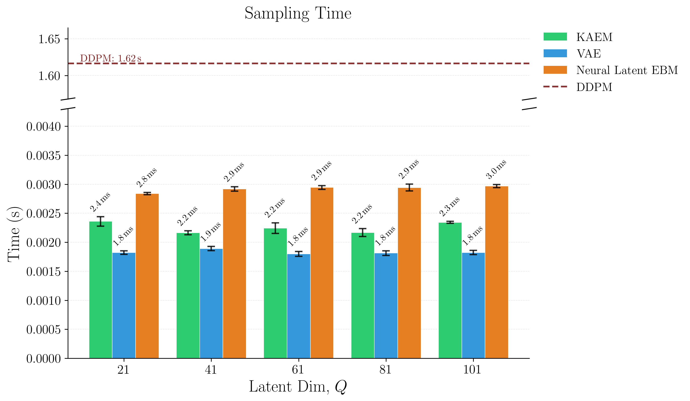
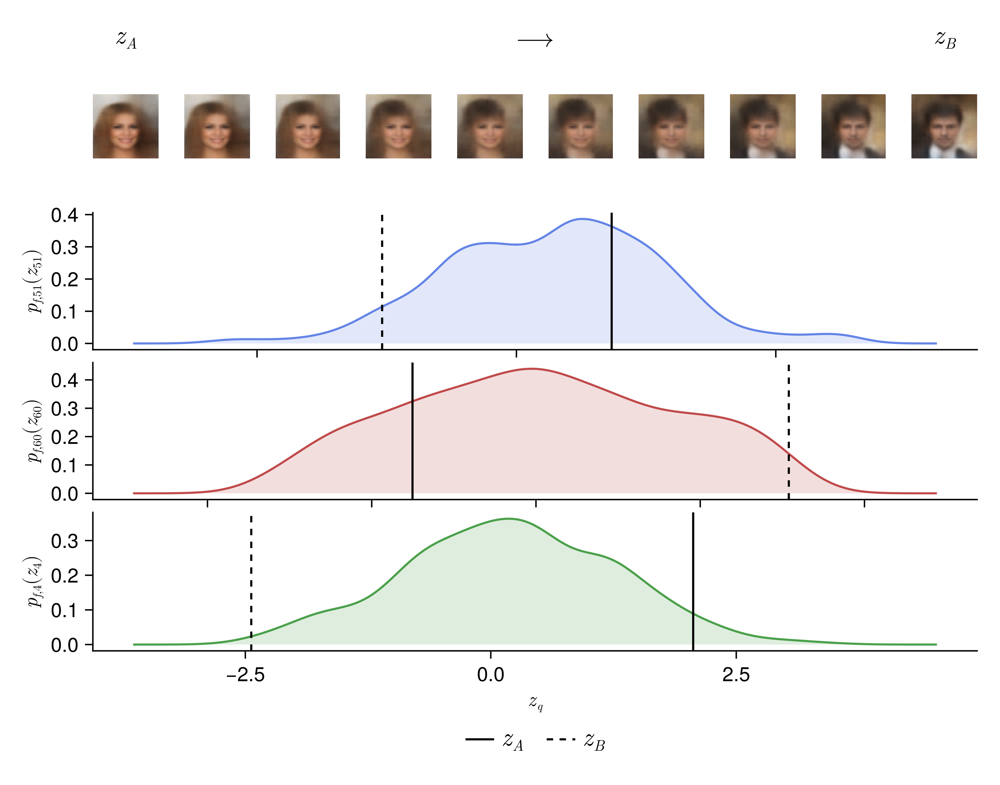

Building towards AI that's
- sustainable
- interpretable
- informed
- accessible
- standardised
KAEM: Kolmogorov-Arnold Energy Model
Generative models succumb to trade-offs. GANs sacrifice training stability, VAEs sacrifice sample quality, diffusion sacrifices inference speed. KAEM addresses all three.
It's built on the Kolmogorov-Arnold Representation Theorem, a finite, deterministic representation capable of capturing any multivariate function. That isn't readily applied to probabilistic modelling, but KAEM gets there using ideas from computational statistics. The paper also presents annealing instead of diffusion, running only during training to handle multimodal posteriors. Unlike diffusion, fast single-pass sampling speed is preserved at generation time, and the learned structure stays intact and inspectable.
This is the first application of deterministic representation to generative modelling. It opens pathways for latent space interpretability and for agreed-on, standardised representations across images, language, and scientific data.
Read the paper →

| Dataset | Model | FID∞ | KID∞ |
|---|---|---|---|
| SVHN | KAEM (MLE) | 64.50 | 0.0535 |
| KAEM (Thermo) | 173.21 | 0.1761 | |
| VAE | 75.45 | 0.0656 | |
| CIFAR10 | KAEM (MLE) | 129.39 | 0.1213 |
| KAEM (Thermo) | 244.50 | 0.2577 | |
| VAE | 158.69 | 0.1452 | |
| CelebA | KAEM (MLE) | 139.41 | 0.1484 |
| KAEM (Thermo) | 127.89 | 0.1344 | |
| VAE | 131.65 | 0.1403 |
Design Philosophies
I don't subscribe to perceptrons and pure scaling! Respect to the giants, but the principles below are how I'm pursuing my 5 requirements! They've shaped the hardware bets at Zetta and they will remain at the heat death of the final Delaware C-corp. Statistics victorious.


Representation first
Attention encodes very little inductive bias. Its weights are entirely data-driven. Flexible when data is abundant, but wrong ( all models are , George Box) and fragile when samples are limited or relationships lie on a complex manifold.
Bespoke models with stronger inductive biases tend to be better on:
- training efficiency
- generalisation
- explainability
- accuracy
- sample and data efficiency
Natural language almost certainly has a better representation too, probably a PDE system. That's a question worth asking.
Darcy Flow
github ↗


Viscoplastic Materials
github ↗


Intelligence is Hierarchical
Real intelligence is hierarchical. Low-level control is handled by simple circuits in the central nervous system, central pattern generators (CPGs). These use physical structure to produce unconscious, rhythmic signals for walking, flying, and swimming, freeing the brain for higher-level control and decision making.
CPGs recover their gaits quickly with little feedback. They are:
- analytically simple to design, tune, and implement
- equipped with robust transfer characteristics
- inexpensive compared to optimisation-based or data-driven control
The default is to reach for fancy algorithms. The best engineers look first for mechanical, analogue, or physically-informed solutions because they are simpler, more reliable, and cheaper. Good mechanics can compensate for bad software. Good software will never compensate for bad mechanics.


Reasoning under uncertainty
All models are wrong. While there are cults arising in service of algorithms, the engineers know that data is where magic manifests! Uncertainty quantification is how engineers compensate where our data-driven methods fail, since we can't afford to be wrong.
Epistemic uncertainty is used to guide where we prioritise drug synthesis, experimentation, and risk assessments. Mistakes are expensive and unnecessary. Another example is a self-driving car that's 99% accurate. It still gets 1 in 100 decisions wrong. This could happen at a school crossing, and that last 1% is where uncertainty quantification saves lives.
Drug Solubility Fitting on AqSolDB
github ↗
Question the default
Diffusion adds noise until the distribution is flat, then learns to denoise. The forward process is an isotropic SDE. It does not preserve the structure of your target. Prior information about modes and geometry is gone by construction.
Annealing is an underexplored alternative for EBMs. High-temperature MCMC chains explore the global landscape, colder ones resolve local structure, and exchanges pass information between them. The prior stays intact. You are smoothing the posterior energy landscape, not destroying its geometry.
In KAEM, this only runs during training, and it gives you:
- no amortisation gap
- no variational bound
- MCMC on a low-dimensional latent space, where it is actually affordable
- parallel scaling across temperatures, rather than sequential cost
Diffusion pays its sequential cost at every generation. This pays it only during training. You want to be greedy with your hardware usage, not with your time spent.
Parallel Tempering
github ↗
Numeric extremism
There is a clear split in what next-gen infrastructure should optimise for:
- LLM serving and inference providers want compression, quantisation, and tokens per second
- Science and engineering want precision, stability, high-order differentiability, and versatility
It is tempting as a hardware company to platform cheap inference alone, but there is a long, rich history of real analysis in engineering that I don't think holds without floating-point representation. I will not bow to trade-offs and mutual exclusivity.
Ozaki scheme II recovers FP64 accuracy from INT8 and FP16 by decomposing floats, running the matmuls at lower precisions, and reconstructing with the Chinese Remainder Theorem. INT8 MACs are 16x smaller than FP64, so the same die area gives 16x the compute. The scheme pipelines, fuses, and avoids kernel launch overhead on Zetta hardware.
- fp-emulation - Recovering high-precision gradient quality from low-precision hardware, for stable high-order differentiation in PINN training.
- tensor_inv - Matrix decompositions (LU, Cholesky, RSVD) on cheap fixed-point systolic arrays with scalar units and VPUs.
- smelt - Pure integer ops for LLMs (ternary quantisation plus bit-shift activations) on commodity CPUs or cheap integer hardware.
Please reach out if you need ML/high-perf hardware! Especially if your workloads involve:
- FP64 arithmetic
- RBF kernel methods
- 1st/2nd/3rd order differentiability
- stencils and linear algebra
- non-convex optimisation or linear programming
Would love to hear about what you're doing :)